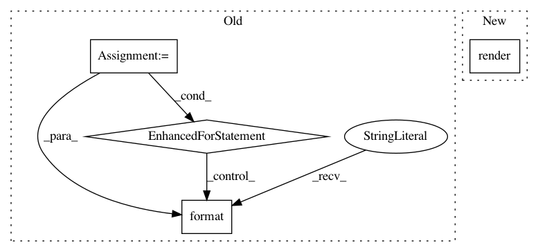

5041068ea241f946217690aee63942261911b42d,tasks.py,,build_docs,#Any#,33
Before Change
all_refs = c.run("git tag --list", hide="out").stdout.split("\n")
all_refs = [tag for tag in all_refs if tag]
all_refs += ALLOWED_BRANCHES
if head_name == "master":
refs = [r for r in all_refs] // copy all_refs
else:
refs = [head_name]
with c.cd("./docs/"):
c.run("mkdir -p _static _templates")
c.run("make clean", hide="out")
build_dirs = []
for ref in refs:
c.run("git checkout " + ref)
b_dir = "_build/html/{}".format(ref)
build_dirs += b_dir
c.run("sphinx-build -b html ./ {} -aT".format(b_dir))
if head_name == "master":
c.run("touch _build/html/.nojekyll")
c.run("echo \"<meta http-equiv=\\"refresh\\" content=\\"0; "
"url=./master/index.html\\" />\" > _build/html/index.html")
for ref in refs:
c.run("echo _build/html/{}/index.html ".format(ref)
+ ">> _build/html/versions.html")
c.run("git checkout gh-pages")
dir_contents = os.listdir()
dir_contents = ((set(dir_contents) - set(all_refs))
After Change
c.run("touch _build/html/.nojekyll")
c.run("mv _templates/index.html _build/html/index.html")
with open("_build/html/versions.html", "wb") as f:
f.write(versions_template.render(refs=refs))
c.run("git checkout gh-pages")
In pattern: SUPERPATTERN
Frequency: 3
Non-data size: 4
Instances
Project Name: PIQuIL/QuCumber
Commit Name: 5041068ea241f946217690aee63942261911b42d
Time: 2018-08-07
Author: emerali@users.noreply.github.com
File Name: tasks.py
Class Name:
Method Name: build_docs
Project Name: bokeh/bokeh
Commit Name: fa11cbde34d68a45a88bca841d47b176b6a9b457
Time: 2016-06-10
Author: aboyle5@hotmail.com
File Name: bokeh/server/views/root_handler.py
Class Name: RootHandler
Method Name: get
Project Name: MolSSI/QCEngine
Commit Name: b0ad8540b0aafd020da4d524399edf7fd58a35fe
Time: 2019-06-13
Author: sjrl423@gmail.com
File Name: qcengine/programs/molpro.py
Class Name: MolproHarness
Method Name: build_input